| 模块 | 完成内容 | 对应代码 |
|---|---|---|
| FOC 数学变换 | 实现 Clarke、Park、反 Park、电角度换算、三相与 alpha/beta 坐标转换。 | src/foc_math.py |
| SVPWM | 实现扇区判断、T1/T2/T0 计算、三相占空比 duty_a/b/c 输出。 | src/svpwm.py |
| 电机模型 | 实现简化 PMSM/BLDC dq 模型，包含 R、L、Kt、Ke、J、B、Fc、母线电压。 | src/motor_model.py |
| 闭环仿真 | 实现速度外环 + d/q 电流内环 + SVPWM + 电机模型的完整仿真主循环，并将速度测试从硬阶跃改为平滑速度轨迹。 | src/simulator.py |
| 参数辨识 | 实现 R/L 阶跃辨识、摩擦 Fc/B 辨识、惯量 J 辨识，并增加摩擦拟合残差评估。 | src/identification.py |
| 前馈补偿 | 实现摩擦和惯量前馈力矩计算，并换算为 q 轴电流前馈。 | src/compensation.py |
| 控制性能优化 | 新增轨迹规划、PI 参数化整定、d/q 电压前馈解耦、模拟编码器测速，并完成 baseline/smooth/precision 对比。 | src/trajectory.pysrc/tuning.pysrc/estimators.py |
| 位置三环控制 | 新增位置 P 环，形成位置环、速度环、电流环的完整级联控制，并完成位置轨迹跟踪验证。 | src/simulator.pyexamples/run_position_three_loop.py |
当前虚拟电机参数参考 Drivex2/4310 资料，用于教学和算法验证，不代表最终真实硬件标定值。
| 参数 | 数值 | 说明 |
|---|---|---|
| 极对数 | 14 | 机械角度转电角度时使用 |
| 相电阻 R | 5.37 Ω | 控制器配置中的标定相电阻 |
| 相电感 L | 0.00326 H | 即 3.26 mH |
| 转矩常数 Kt | 0.23 Nm/A | q 轴电流到电磁转矩的换算 |
| 反电动势常数 Ke | 0.23 V/(rad/s) | 速度引起的 q 轴反电动势 |
| 转动惯量 J | 2.02e-5 kg·m² | 机械加速度相关参数 |
| 粘滞摩擦 B | 2.0e-4 Nm/(rad/s) | 速度越大阻力越大 |
| 库仑摩擦 Fc | 0.015 Nm | 与运动方向相关的近似恒定摩擦 |
| 母线电压 | 24 V | SVPWM 和逆变桥电压来源 |
该测试验证 Ualpha/Ubeta -> SVPWM -> duty_a/duty_b/duty_c 的转换过程。三相占空比应周期变化、相互错开，并始终保持在 0 到 1 范围内。
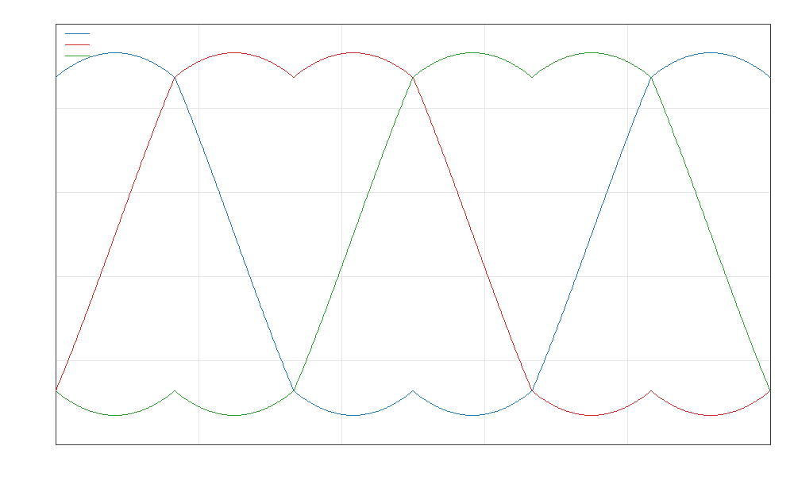
该测试验证速度外环、电流内环、反 Park、SVPWM 和电机模型是否能形成稳定闭环。为避免硬阶跃目标带来不真实的无限加速度，本轮测试使用平滑速度轨迹：静止、平滑加速到 15 rad/s、保持、再平滑反转到 -8 rad/s。当前速度 RMS 误差约为 0.43245 rad/s，最终速度误差约为 -0.01212 rad/s。
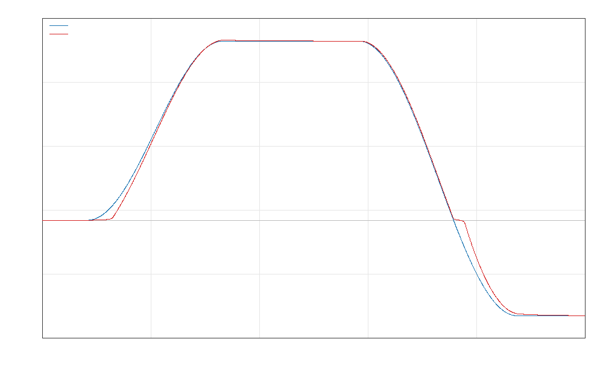
该测试验证电流环是否能让 Iq 跟踪目标转矩电流，并把 Id 压到接近 0。平滑轨迹下，目标 q 轴电流范围约为 -0.0905 A 到 0.0885 A，实际 q 轴电流范围约为 -0.0732 A 到 0.0792 A；Id 范围约为 -0.000209 A 到 0.000230 A，说明 d 轴电流基本被压住，FOC 解耦方向正确。
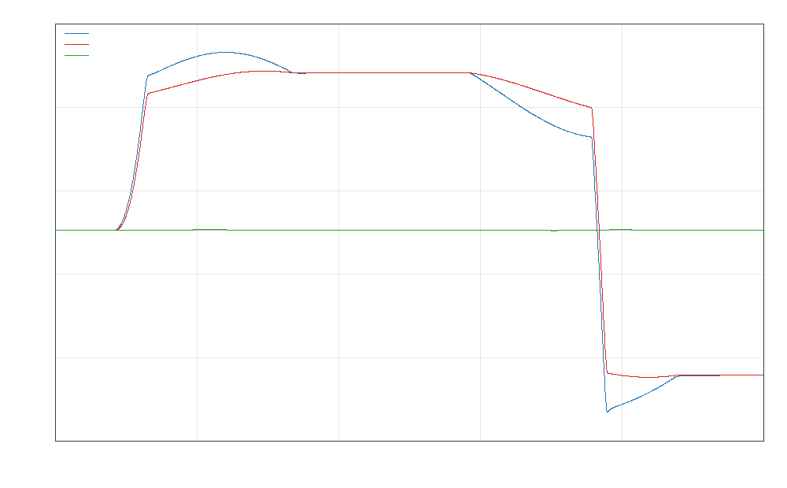
R/L 辨识使用 RL 阶跃响应：
i(t) = V/R * (1 - exp(-tR/L))
稳态电流决定 R，电流上升速度决定 L。当前辨识结果如下：
| 参数 | 辨识结果 | 评价 |
|---|---|---|
| R | 5.3700001679950855 Ω | 与仿真设定 5.37 Ω 基本一致 |
| L | 0.003259999920566609 H | 与仿真设定 3.26 mH 基本一致 |
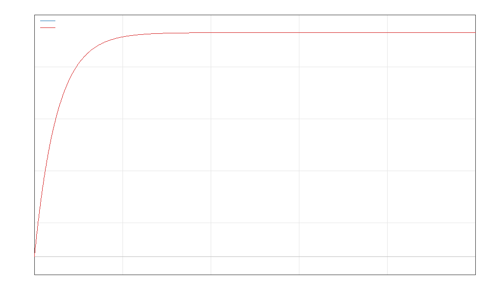
摩擦和惯性使用以下模型：
tau = J * alpha + B * omega + Fc * sign(omega)
恒速段用于拟合 Fc 和 B，加减速动态段用于拟合 J。原始仿真力矩中故意叠加了一个小的高频扰动，因此 J/B/Fc 模型不会跟随所有细小波纹；它主要拟合低频物理趋势。当前辨识结果如下：
| 参数 | 辨识结果 | 说明 |
|---|---|---|
| Fc | 0.01497472545256575 Nm | 库仑摩擦 |
| B | 0.00020824700560473909 Nm/(rad/s) | 粘滞摩擦 |
| J | 2.0906066624351692e-05 kg·m² | 转动惯量 |
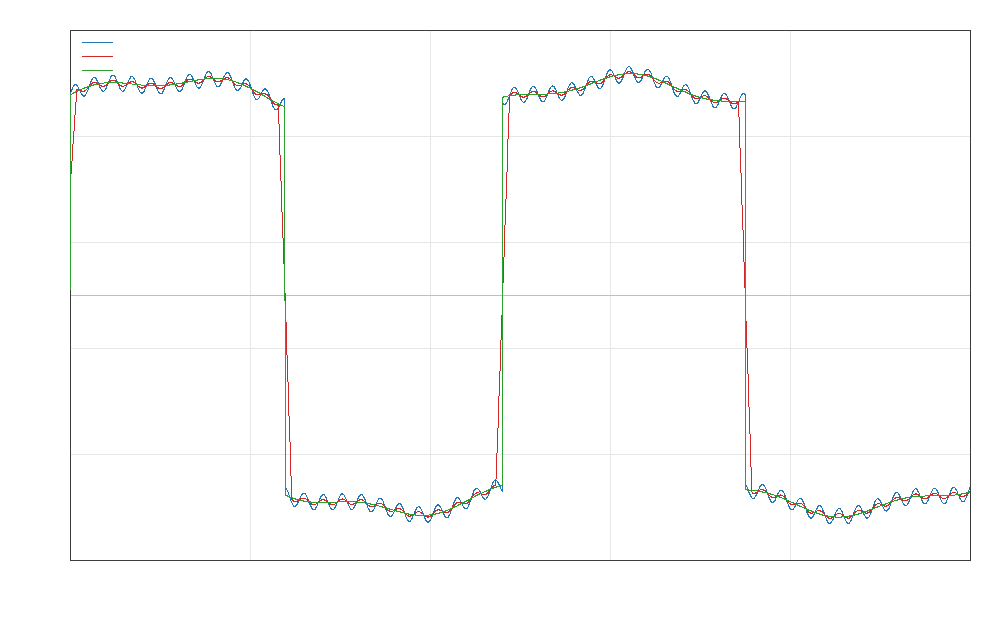
残差指标：
| 指标 | 数值 | 说明 |
|---|---|---|
| 原始残差 RMS | 0.0004250125 Nm | 包含人为高频扰动 |
| 滤波残差 RMS | 0.0001524408 Nm | 更接近低频趋势拟合误差 |
| 最大绝对残差 | 0.0006587849 Nm | 原始残差峰值 |
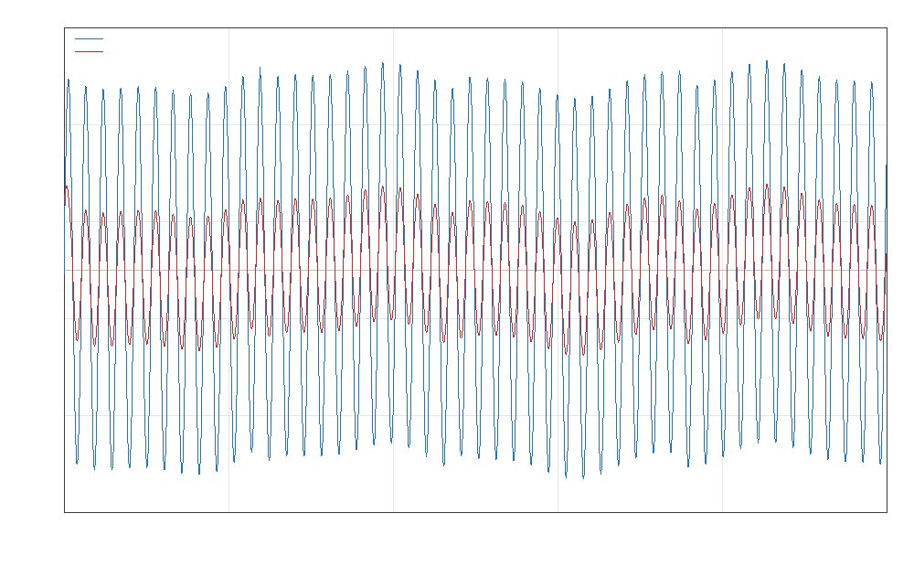
补偿使用前馈力矩：
tau_ff = J_hat * alpha_ref + B_hat * omega_ref + Fc_hat * tanh(omega_ref / eps) Iq_ff = tau_ff / Kt
该前馈电流叠加到速度 PI 输出上，用来提前克服摩擦和惯性。当前对比结果：
| 指标 | 无补偿 | 有补偿 | 改善 |
|---|---|---|---|
| 速度 RMS 误差 | 1.145756 rad/s | 0.393507 rad/s | 降到 34.3% |
| 位置 RMS 误差 | 0.232621 rad | 0.056189 rad | 降到 24.2% |
| 峰值速度误差 | 3.255541 rad/s | 0.812728 rad/s | 明显降低 |
| 峰值位置误差 | 0.363995 rad | 0.103004 rad | 明显降低 |
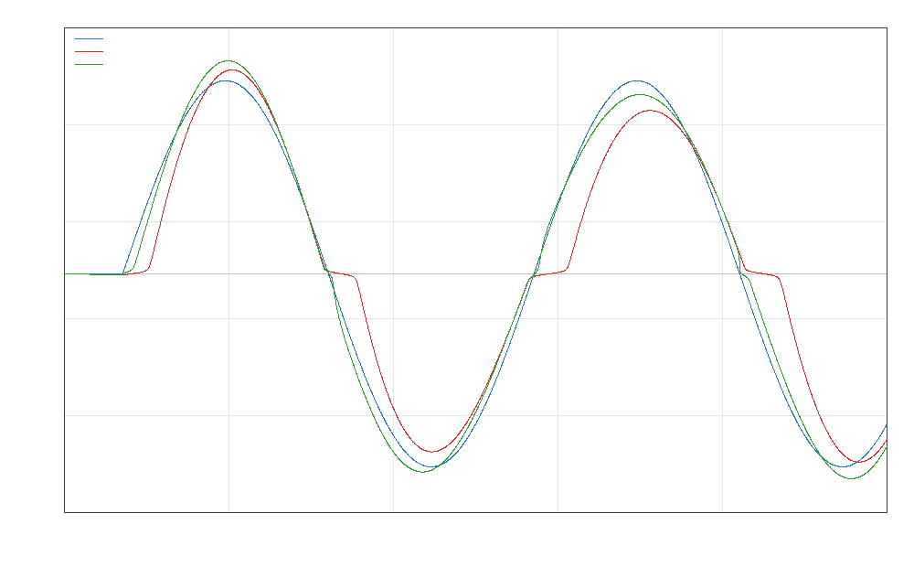
本轮控制性能优化参考 SimpleFOC 的 FOC 主流程，以及 moteus 的轨迹规划、级联控制和前馈思路。在原有 baseline 基础上，拆成两种优化目标：smooth 模式优先平滑轨迹和降低电流尖峰；precision 模式不重设目标速度，优先提高对原始速度命令的跟随精度。
| 指标 | baseline | smooth | precision | 评价 |
|---|---|---|---|---|
| 相对原始命令的速度 RMS 误差 | 1.52965 rad/s | 9.84285 rad/s | 0.73683 rad/s | precision 降到 48.17% |
| 相对自身目标的速度 RMS 误差 | 1.52965 rad/s | 0.43334 rad/s | 0.73683 rad/s | smooth 跟踪的是规划后目标 |
| 位置 RMS 误差 | 0.13127 rad | 0.03053 rad | 0.07239 rad | precision 比 baseline 降低 |
| Iq 峰值 | 0.24797 A | 0.08733 A | 1.34576 A | precision 需要更大转矩电流 |
| Id RMS | 0.000765 A | 0.000774 A | 0.000001 A | d 轴电流仍接近 0 |
| 电压饱和比例 | 0 | 0 | 0.006% | precision 基本未触发限压 |
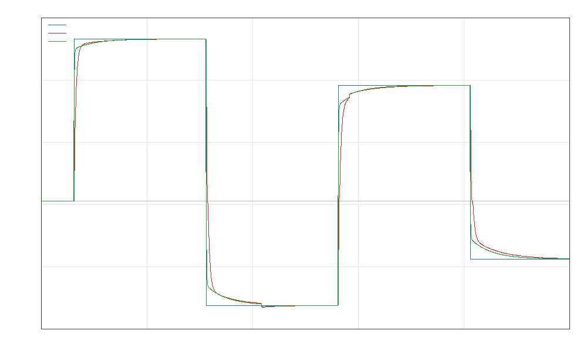
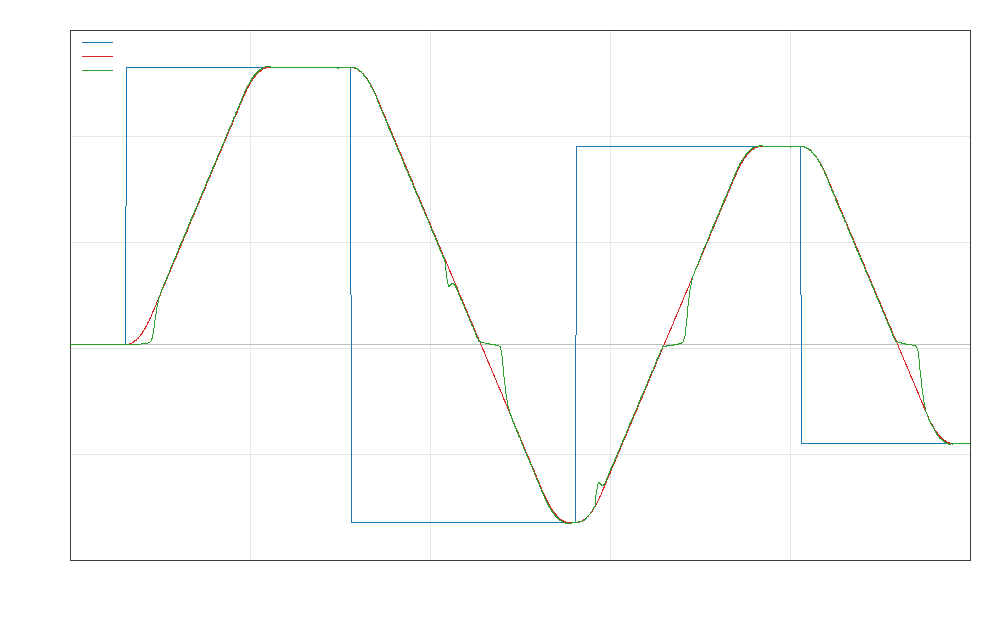
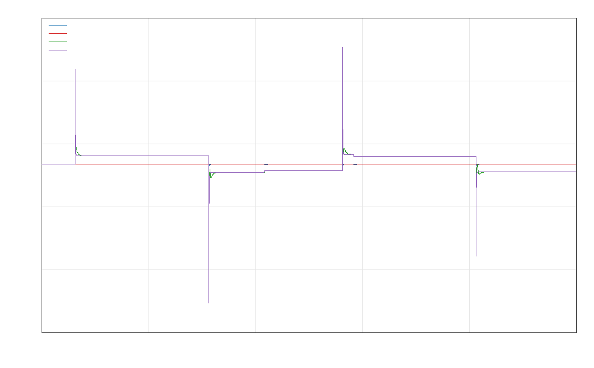
在速度环和电流环基础上，新增最外层位置 P 环，形成完整的“位置目标 -> 目标速度 -> 目标 Iq -> Vd/Vq -> SVPWM”级联控制。位置环输出会被速度限制约束，避免位置误差较大时给速度环过大的目标。
theta_error = theta_target - theta_feedback omega_target = clamp(Kp_pos * theta_error + omega_ff, +/- omega_limit)
| 指标 | 结果 | 评价 |
|---|---|---|
| 位置 RMS 误差 | 0.01203 rad | 目标位置和实际位置基本重合 |
| 速度 RMS 误差 | 0.21623 rad/s | 速度环能跟随位置环输出 |
| Iq 峰值 | 0.07037 A | 当前位置轨迹下电流压力较小 |
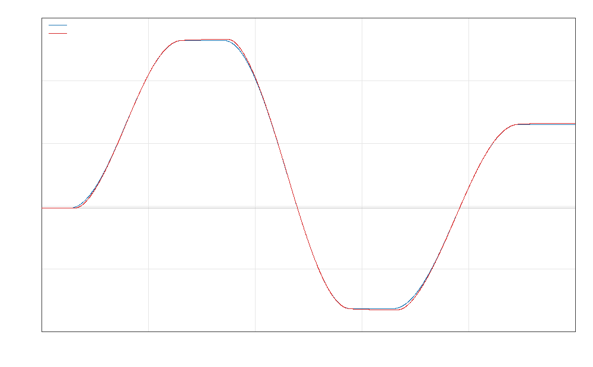
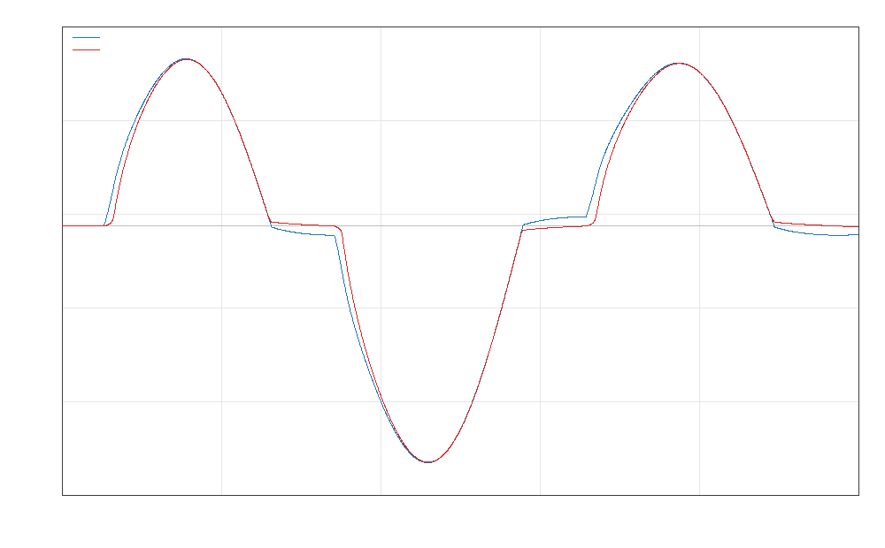
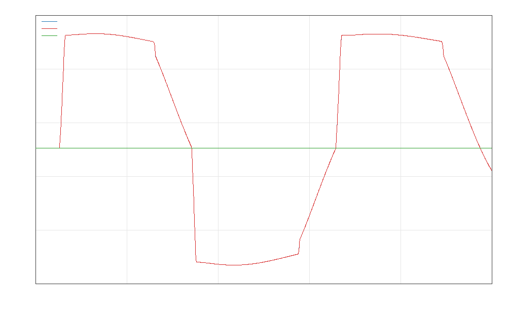
当前仿真数据主要来自理想模型，因此结果说明“方法可行”，但不能直接等同于真实硬件性能。